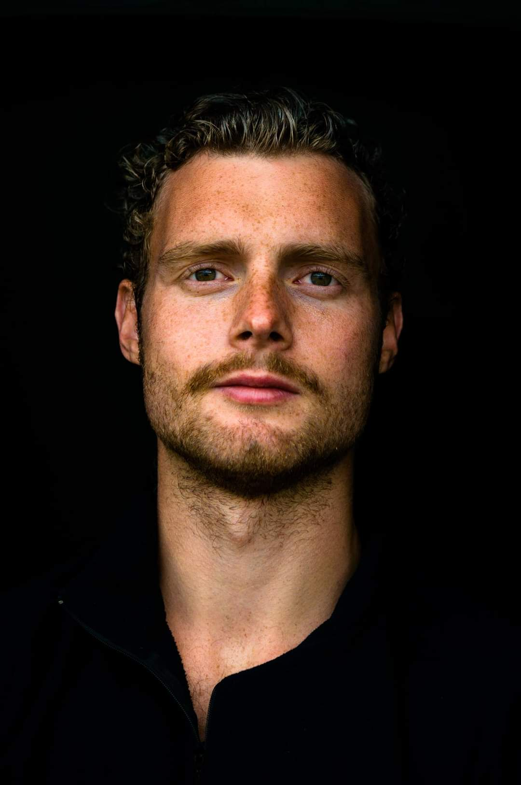

mail@email.com
mobile: +852 xxxxxxxx
Nationality: Chinese
# Info
## Profil
I mine 8 år som konstruktionsingeniør har min nysgerrighed drevet mig mod at forbedre, automatisere og digitalisere mine egne og andres processer og arbejdsgange. Mine analytiske egenskaber, i kombination med mine kommunikative egenskaber, gør at jeg formår at formidle dataindsigter forståelig og enkelt. Jeg har en god forretningsforståelse og trives i teams, da jeg værdsætter samarbejde og fælles idéudveksling.
## Erhverserfaring
### 2015 – nu: Artelia Denmark, Buddinge / Udvalgte projekter
#### 2023-nu: Mathcad-Link
- Ide og udvikling af C#-app der kobler sig på Mathcads API. Mål om at forenkle og reducere fejl i dokumentation og forenkle KS.
#### 2023-nu: LCA-platform
- Excel dataplatform der standariserer mængder i LCA-sammenhæng. ELT i Power Quary som ELT-værktøj. Ansvarlig for datastrukturen. Har reduceret overleveringsfejl, sikret korrekt udregning af CO2-udslip samt sparet tid.
#### 2022-nu: LCA arbejdsgruppe - CO2 i prosjekteringen
- Ansvarlig for udarbejdelse og analyse af variantstudier for CO2-påvirkning af konstruktioner
- Analysere data, hvor hovedresultater præsenteres i Power BI
- Analyserne destileres og formidles som one-pagers til ingeniører inspireret af "Storytelling With Data"
#### 2022-nu: Data i Artelia
- Koncern arbejdsgruppe der kigger på hvilken rætning Artelia skal hen med tanke på data.
#### 2018-2023: Livsvitenskapsbygget:
- Fagansvarlig og bygherrerådgiver på byggeri på 100 000 m2.
- Anvarlig for at kontrollere og formidle data mellem BIM og beregningsprogrammer gennem Dynamo, Python og Excel.
#### 2016-2016: Scherfigs have
- Fagingeniør. Ansvarlig for beregning hvor jeg udviklet Excel dataplatform der hentet og kombinerede data fra forskellige regneark med VBA. Arket lavde oversigt for at enkelt analysere kritiske lastkombinationer.
## Journalistik, design og kommunikation
- 2011-2012: Redaktør Studentavis HiOA “ERGO” | Korrektur og design af avisens indhold
- 2009-2012: Designer og fotograf | Selvstendig ved siden af studie
- 2009-2009: Redaktør “Soldatnytt” Det Norske Forsvar | Grenader
- 2008-2009: Journalist og designer “Soldatnytt” Det Norske Forsvar | Værnepligtig
## IT-værktøjer
Excel / VBA / Power BI / Power Query / Python / Grasshopper / Dynamo / Obsidian
## Tidligere erhverserfaring
- 2014–2015: MOE AS, Buddinge | Student Intern
- 2015–2015: DTU, Lyngby | Student Assistant Marine Structures
- 2013–2013: HiO, Oslo | Student Assistant Autodesk Revit
- 2012–2013: Tronrud Bygg | Student Intern
## Uddannelse
- 2013-2015: MSc Structural Engineering | Technical University of Denmark
- 2010-2013: BSc Structural Engineering | Oslo Metropolitan University
- 2009-2010: Journalism | Oslo Metropolitan University
- 2007-2008: Photography | Skjeberg Folk High School
- 2003-2006: Media and Communication | Drømtorp High School
## Publikationer
- POAC 2015: New Harbor in Western Greenland. Field investigations and utilization of existing materials
- Feltarbejde med geotekniske undersøgelser, 3 uger i Grønland med fokus på optimering af materialer
## Frivilligt arbejde
- 2022-nu:
- 2014-2015: Styremedlem i foreningen Tekna København
- 2011-2013: NITO-studentene ved HiOA – Næstformand / Formand
- 2012: Læringsmiljøudvalget ved HiO
- 2011-2012: Ingeniører Uden Grænser (IUG) (Lokallag HiO) – Bestyrelsesmedlem
## Fritid
- Jeg Udforske egen data
- Foto og digitalt design.
- Klatring, friluftsliv, og løb.
Referencer som opgives ved forespørgsel
## 5 bøger der har påvirket mig
- Storytelling with data
-